🏠
日
月
縦書き／横書き

| 【対訳】ピーターラビット ② ベンジャミンバニーのおはなし -THE TALE OF BENJAMIN BUNNY- | |
| ビアトリクス・ポター | |
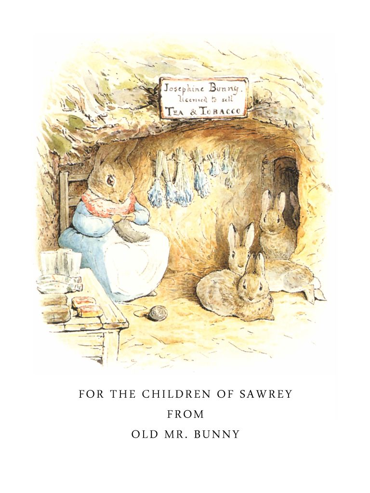
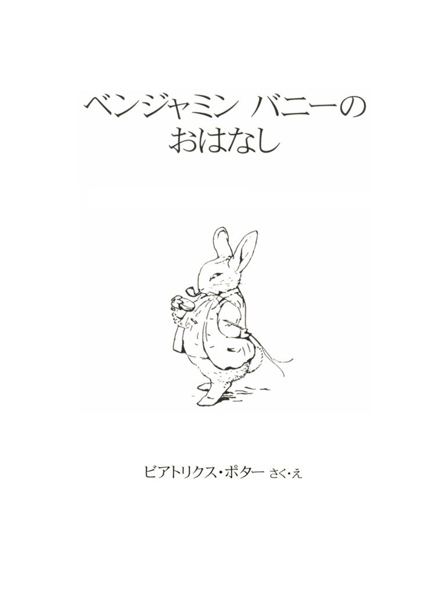
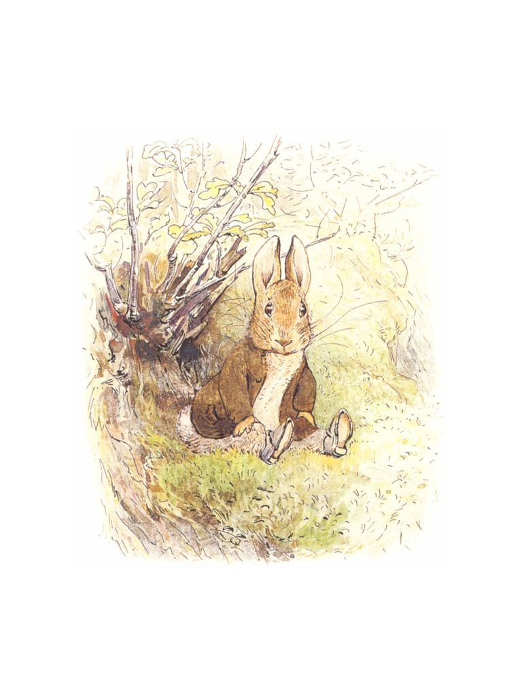
ある朝、小さなうさぎが道端の土手の上に座っていました。
うさぎは耳をピンと立てて、パカパカ パカパカという馬の足音を聞いていました。
馬車がやってきたのです。馬車を御していたのはマグレガーさんで、そのわきにはマグレガーの奥さんがよそゆきの帽子をかぶってすわっていました。
One morning a little rabbit sat on a bank.
He pricked his ears and listened to the trit-trot, trit-trot of a pony.
A gig was coming along the road; it was driven by Mr. McGregor, and beside him sat Mrs. McGregor in her best bonnet.
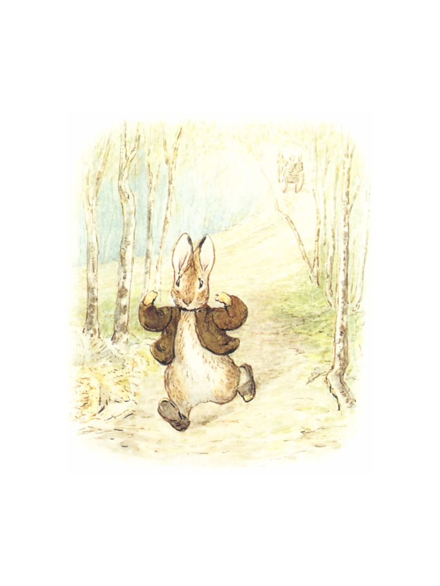
馬車が行ってしまうがはやいか、ベンジャミン・バニーは土手から道へと滑り降りて―――ホップ、スキップ＆ジャンプをしながら、親類の家に駆けつけました。この親類のうさぎたちはマグレガーさんの畑のうしろの森に住んでいたのです。
As soon as they had passed, little Benjamin Bunny slid down into the road, and set off--with a hop, skip, and a jump--to call upon his relations, who lived in the wood at the back of Mr. McGregor's garden.
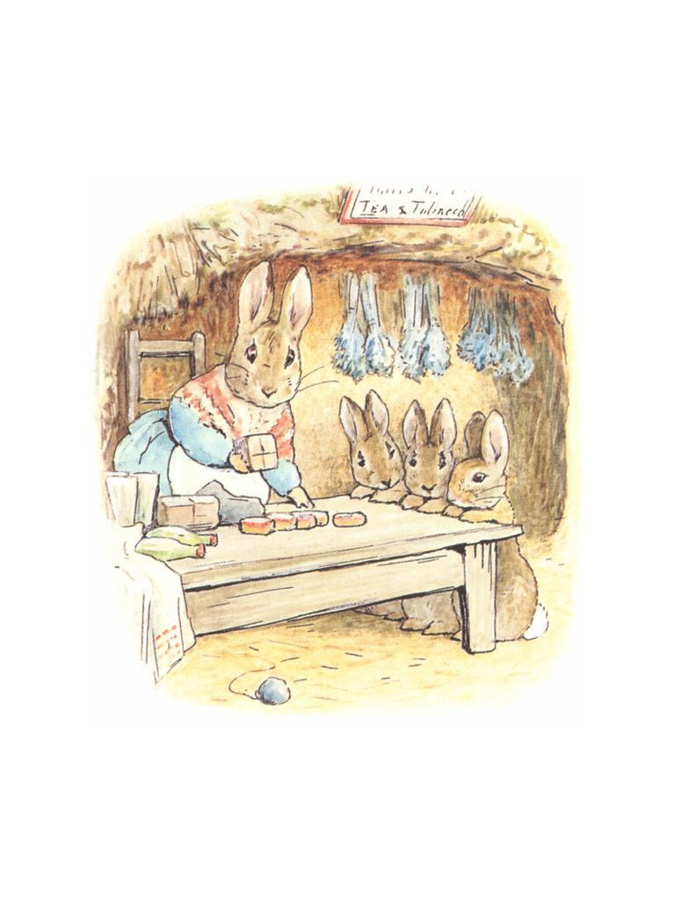
その森には、うさぎ穴がとてもたくさんありました。中でもいちばん砂っぽい、いちばんきちんと片付いたうさぎ穴に、ベンジャミンのおばさんと、いとこのフロプシーやモプシー、カトンテール、そしてピーターが住んでいました。
ピーターたちのお父さんはもういませんでした。そこで、お母さんは、うさぎの毛の手袋やそでぐち飾りを編んで暮らしを立てていました。
（わたしも前にバザーで一組買ったことがあります。）それから、この奥さんは煎じ薬やローズマリー茶、"うさぎたばこ"も売っていました。（"うさぎたばこ"というのはわたしたちがラベンダーと呼んでいる草です。）
That wood was full of rabbit holes; and in the neatest, sandiest hole of all lived Benjamin's aunt and his cousins--Flopsy, Mopsy, Cotton-tail, and Peter.
Old Mrs. Rabbit was a widow; she earned her living by knitting rabbit-wool mittens and muffatees (I once bought a pair at a bazaar). She also sold herbs, and rosemary tea, and rabbit-tobacco (which is what we call lavender).
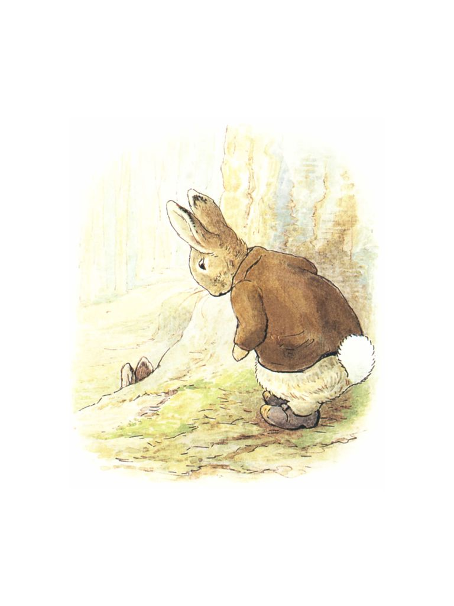
ベンジャミン・バニーは、おばさんにあまり会いたくありませんでした。
そこでモミの木の後ろにまわっていくと、もう少しでいとこのピーターにつまずきそうになりました。
Little Benjamin did not very much want to see his Aunt.
He came round the back of the fir-tree, and nearly tumbled upon the top of his Cousin Peter.
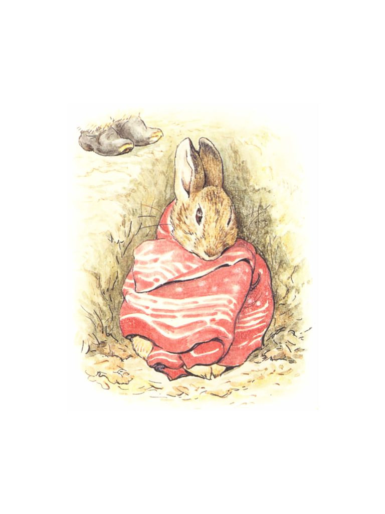
ピーターはそこにひとりでいました。ピーターはとても元気のない様子で、大きな赤い木綿のハンカチにくるまっていました。
「ピーター」ベンジャミンはひそひそ声で言いました。「お前の服、誰に取られたの？」
Peter was sitting by himself. He looked poorly, and was dressed in a red cotton pocket-handkerchief.
"Peter," said little Benjamin, in a whisper, "who has got your clothes?"
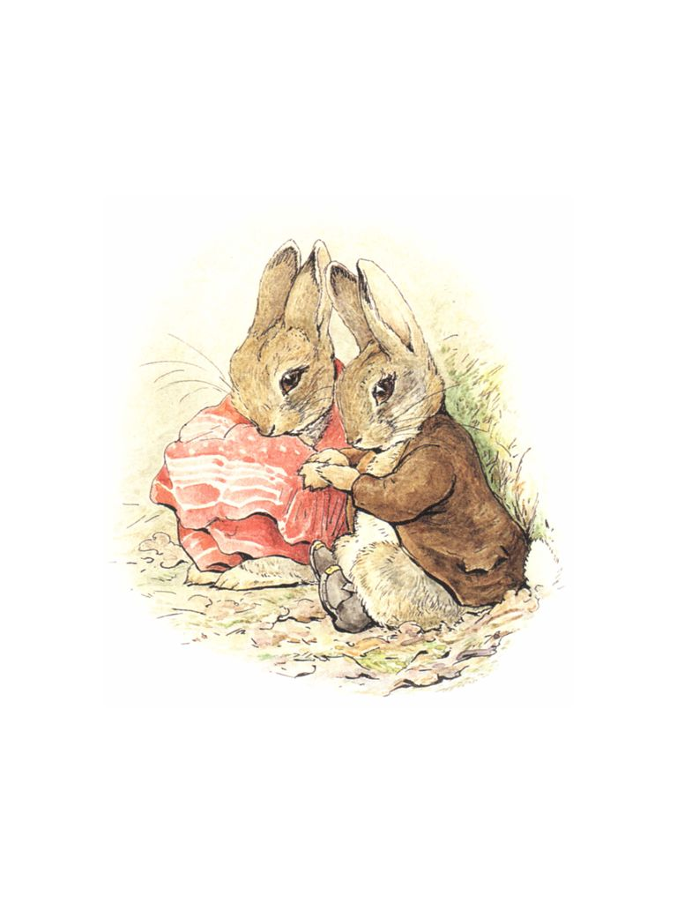
「マグレガーさんの畑のかかしに」とピーターは答えて、マグレガーさんの畑であちこち追い回されたことや、靴や上着を落としてきた話をしました。
ベンジャミンは、ピーターのそばに腰を下ろして、「今、マグレガーさんが馬車で出かけるのを見てきたよ」とつぶやき。それに奥さんはよそ行きの帽子をかぶっていったから、今日は大丈夫、一日帰ってこないさ、と言いました。
Peter replied, "The scarecrow in Mr. McGregor's garden," and described how he had been chased about the garden, and had dropped his shoes and coat.
Little Benjamin sat down beside his cousin and assured him that Mr. McGregor had gone out in a gig, and Mrs. McGregor also; and certainly for the day, because she was wearing her best bonnet.
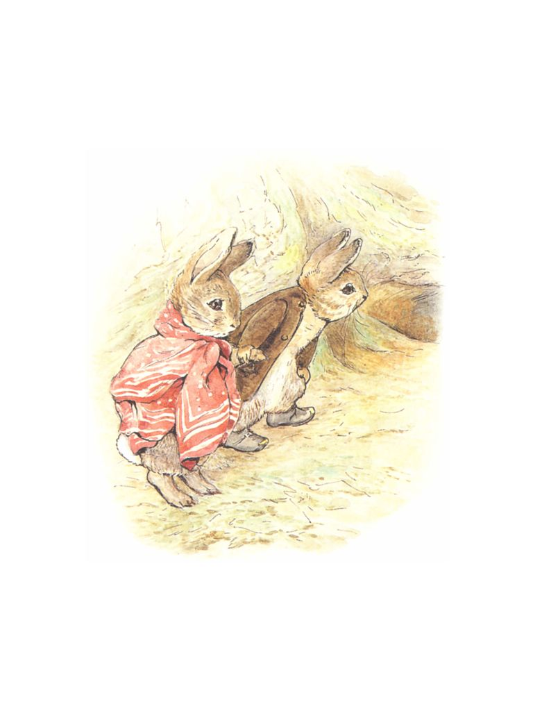
それなら、今日は雨でも降ればいい、とピーターは言いました。
その時ピーターのお母さんが穴の中で「カトンテール、カトンテール、煎じ薬にするカモミールを取っておいで！」と言っている声がしました。
ピーターは、散歩に出かけた方が気分がよくなるかも知れない、とベンジャミンに言いました。
Peter said he hoped that it would rain.
At this point old Mrs. Rabbit's voice was heard inside the rabbit hole, calling: "Cotton-tail! Cotton-tail! fetch some more camomile!"
Peter said he thought he might feel better if he went for a walk.
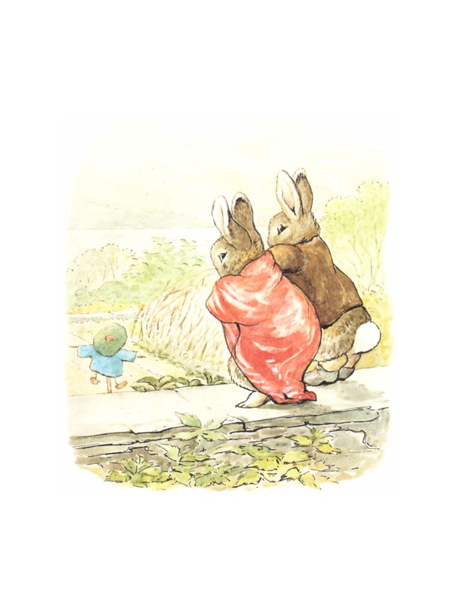
ふたりは、手をつないで出かけました。そして森のはずれの石垣に上ってみると、そこからはマグレガーさんの家の畑が見えました。
確かにかかしはピーターの上着を着て、靴をはいていました。そして頭にはマグレガーさんの毛糸の帽子の古くなったのをかぶっていました。
They went away hand in hand, and got upon the flat top of the wall at the bottom of the wood. From here they looked down into Mr. McGregor's garden.
Peter's coat and shoes were plainly to be seen upon the scarecrow, topped with an old tam-o'-shanter of Mr. McGregor's.
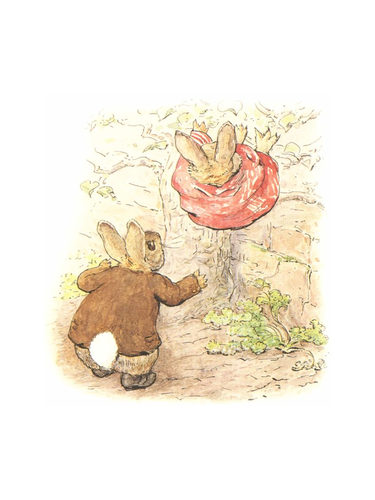
ベンジャミンは言いました。
「木戸の下をくぐったりすると、服が汚れるんだよ。ナシの木を伝わって入り込むのがいいやり方なんだ」
ピーターは頭から先にズトンと地面に落ちましたが、下の畑が耕したばかりでやわらかかったので、大したけがはありませんでした。
Little Benjamin said: "It spoils people's clothes to squeeze under a gate; the proper way to get in is to climb down a pear-tree."
Peter fell down head first; but it was of no consequence, as the bed below was newly raked and quite soft. It had been sown with lettuces.
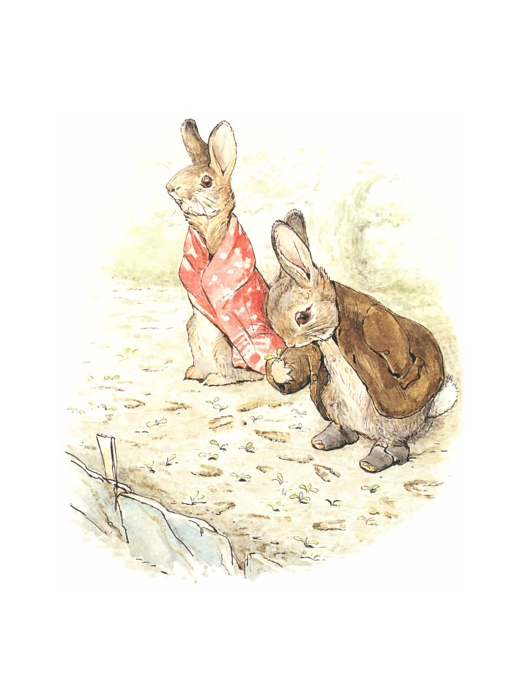
そこはレタスの種をまいたばかりの苗床でした。
ふたりは苗床中に奇妙な小さい足あとをとてもたくさんつけました。特にベンジャミンのは木靴をはいていたので、おかしな足あとでした。
They left a great many odd little footmarks all over the bed, especially little Benjamin, who was wearing clogs.
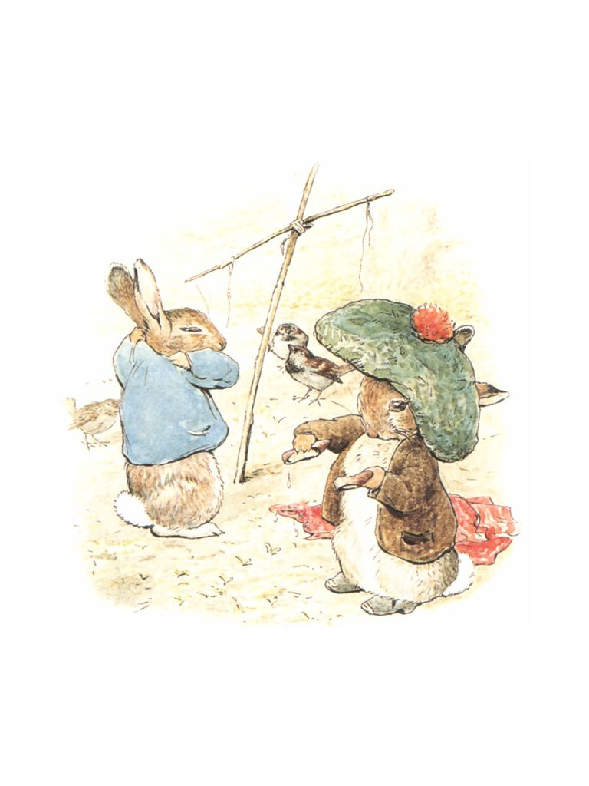
まず、ピーターの服を取り返すことにしよう、とベンジャミンは言いました。そうすればピーターの着ているハンカチを使うことができます。
ふたりはかかしを裸にしました。夜の間に雨が降ったので、靴には水がたまっていて、上着は少し縮んでいました。
ベンジャミンは毛糸の帽子をかぶってみましたが、大きすぎました。
Little Benjamin said that the first thing to be done was to get back Peter's clothes, in order that they might be able to use the pocket-handkerchief.
They took them off the scarecrow. There had been rain during the night; there was water in the shoes, and the coat was somewhat shrunk.
Benjamin tried on the tam-o'-shanter, but it was too big for him.
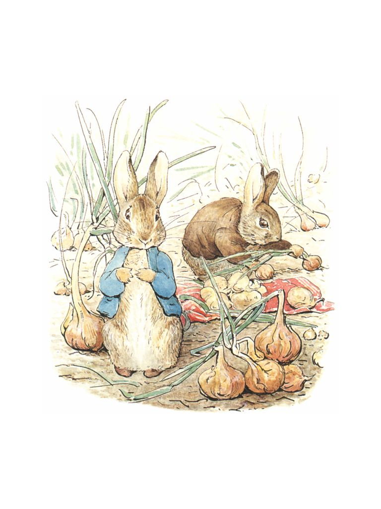
それからベンジャミンは、ハンカチにタマネギをいっぱい入れておばさんにプレゼントしようよ、と言いました。
ピーターはそわそわして、落ち着かない様子でした。色々な音が聞こえるような気がしたのです。
Then he suggested that they should fill the pocket-handkerchief with onions, as a little present for his Aunt.
Peter did not seem to be enjoying himself; he kept hearing noises.
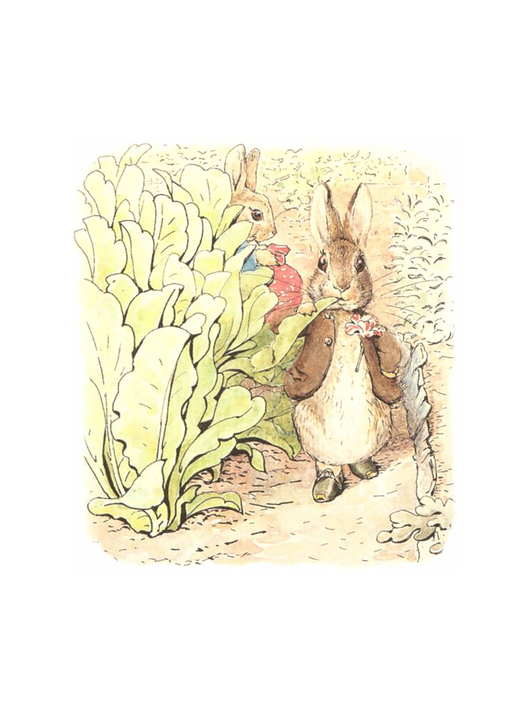
一方、ベンジャミンは悠々としたもので、レタスの葉を1
枚食べたりしました。いつも日曜日にはお父さんと、ごちそうに使うレタスを取りにこの畑にくるのだ、とベンジャミンは言いました。
（ベンジャミンのお父さんは息子と同じ名前でしたが、ベンジャミン・バニー氏と呼ばれていました。）
この畑のレタスは確かに上等でした。
Benjamin, on the contrary, was perfectly at home, and ate a lettuce leaf. He said that he was in the habit of coming to the garden with his father to get lettuces for their Sunday dinner.
(The name of little Benjamin's papa was old Mr. Benjamin Bunny.)
The lettuces certainly were very fine.
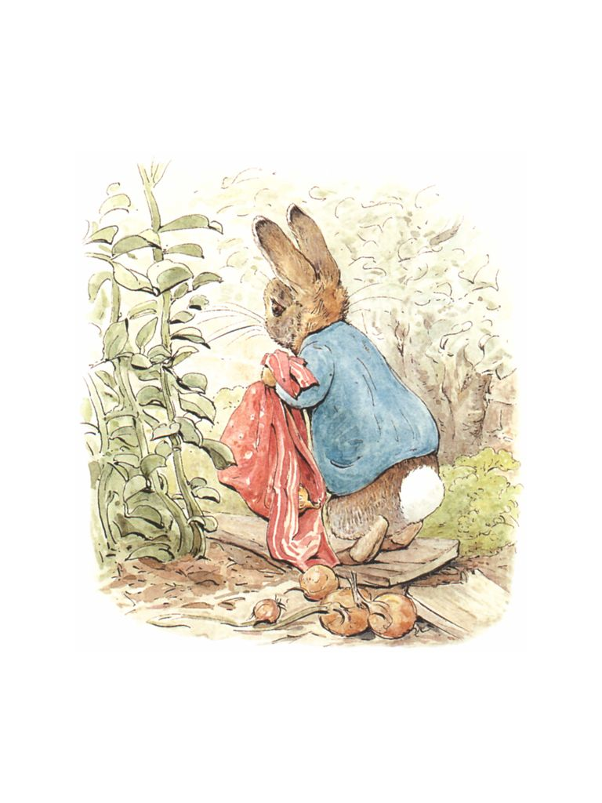
ピーターは何も食べませんでした。そして、早く家に帰りたいのだ、と言いました。少し行くうち、ピーターはタマネギを半分も落としてしまいました。
Peter did not eat anything; he said he should like to go home. Presently he dropped half the onions.
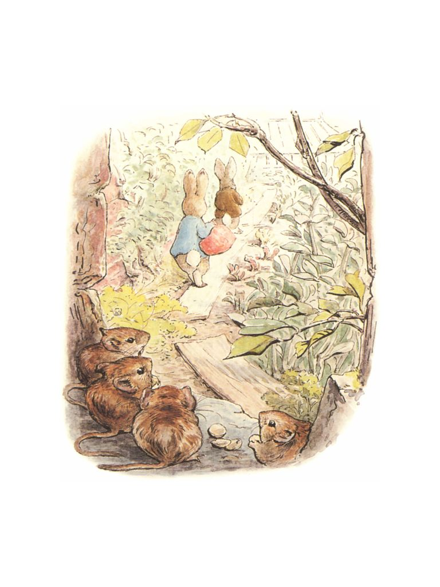
野菜の荷物を持って、ナシの木を登るのは無理だ、とベンジャミンは言いました。そして、大胆にも先に立って畑の向こう側へどんどん歩いていきました。陽のあたっている赤いレンガ塀のそばに板が渡してありました。ふたりはそこを渡っていきました。
ねずみたちが４，５匹、自分たちの家の前に座ってサクランボの種を割っていましたが、ピーターとベンジャミンを見ると目をウィンクさせてあいさつしました。
Little Benjamin said that it was not possible to get back up the pear-tree with a load of vegetables. He led the way boldly towards the other end of the garden. They went along a little walk on planks, under a sunny, red brick wall.
The mice sat on their doorsteps cracking cherry-stones; they winked at Peter Rabbit and little Benjamin Bunny.
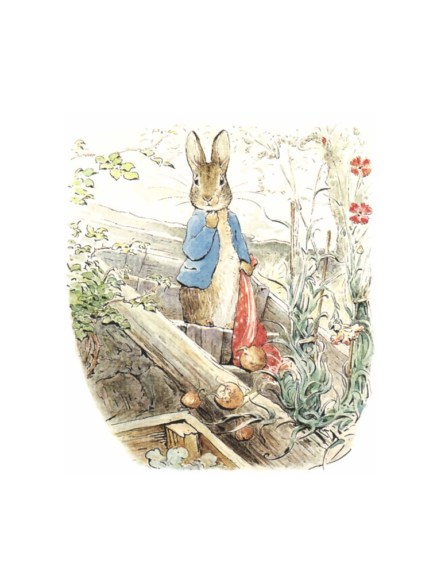
少し行くうち、ピーターはまたハンカチから手を放してしまいました。
Presently Peter let the pocket-handkerchief go again.
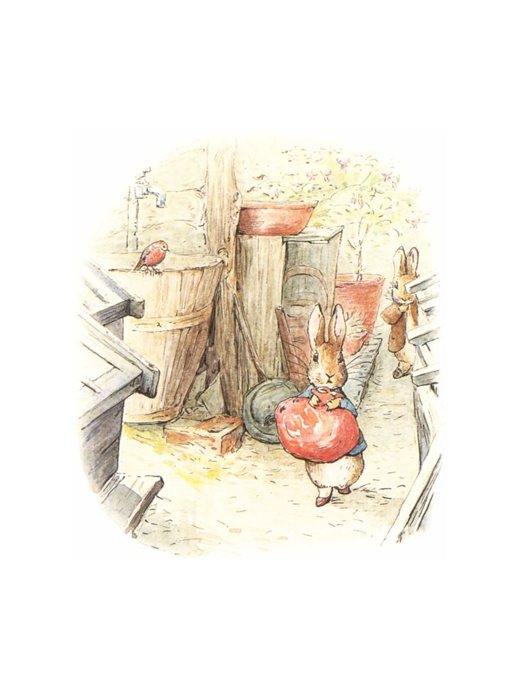
ふたりは、植木鉢やフレームや桶の間に入り込んでしまいました。いよいよ怖い音がたくさん聞こえてくるような気がして、ピーターの目はあめ玉の様に大きくなりました。
ピーターは２、３歩ベンジャミンの前を歩いていましたが、そのうち急に立ち止まりました。
They got amongst flower-pots, and frames, and tubs. Peter heard noises worse than ever; his eyes were as big as lolly-pops!
He was a step or two in front of his cousin when he suddenly stopped.
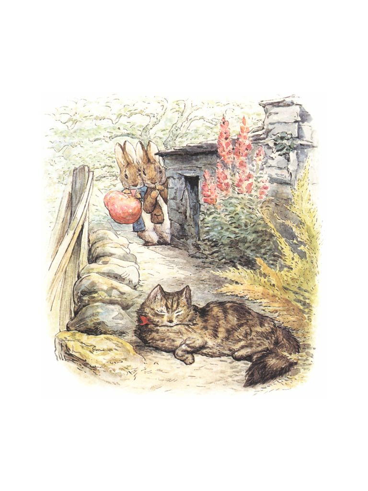
ふたりが角を曲がったとたん、目の前にいたのは、こういうものでした。
ベンジャミンはこれを見るなり、自分とピーターのタマネギの上に大きなかごをかぶせました......。
This is what those little rabbits saw round that corner!
Little Benjamin took one look, and then, in half a minute less than no time, he hid himself and Peter and the onions underneath a large basket....
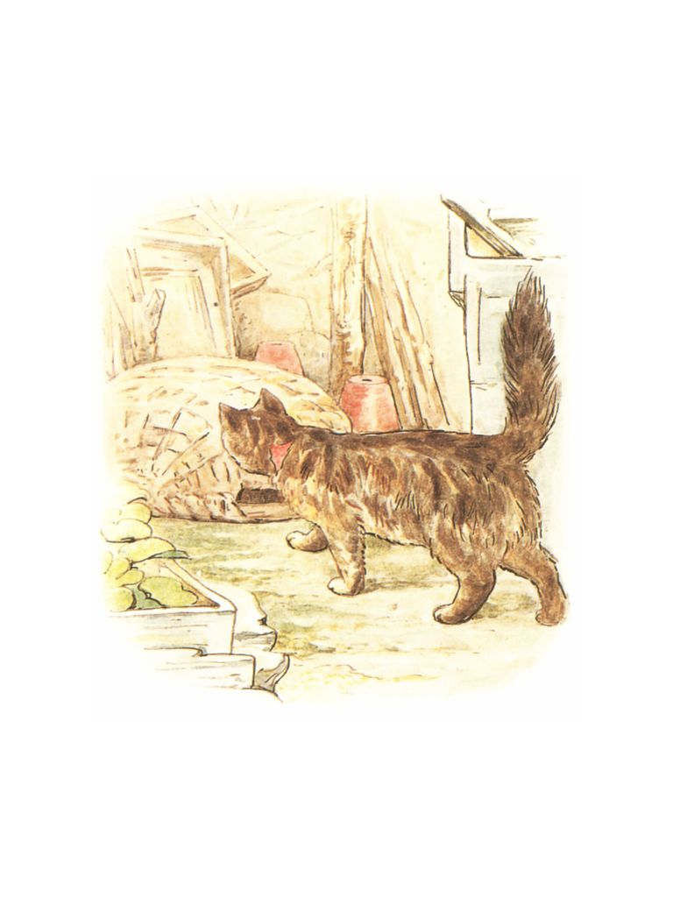
ねこは立ち上がって伸びをするとかごのそばにやってきて、においを嗅ぎました。
このねこはタマネギのにおいが好きだったのかも知れませんね！
とにかく、ねこはかごの上に登ってそこへすわりこみました。
The cat got up and stretched herself, and came and sniffed at the basket.
Perhaps she liked the smell of onions!
Anyway, she sat down upon the top of the basket.
そして、５時間座っていました。
＊ ＊ ＊
かごの中は大変暗いし、タマネギのにおいはとてもひどかったので、わたしはその中にいたピーターとベンジャミンを絵に描いてお見せするわけにはいきません。とにかくピーターとベンジャミンはタマネギのにおいには泣かされました。
お日さまは森の後ろに沈んで、もう夕方でした。でも、ねこはまだかごの上にすわっています。
She sat there forfive hours
.
＊ ＊ ＊
I cannot draw you a picture of Peter and Benjamin underneath the basket, because it was quite dark, and because the smell of onions was fearful; it made Peter Rabbit and little Benjamin cry.
The sun got round behind the wood, and it was quite late in the afternoon; but still the cat sat upon the basket.
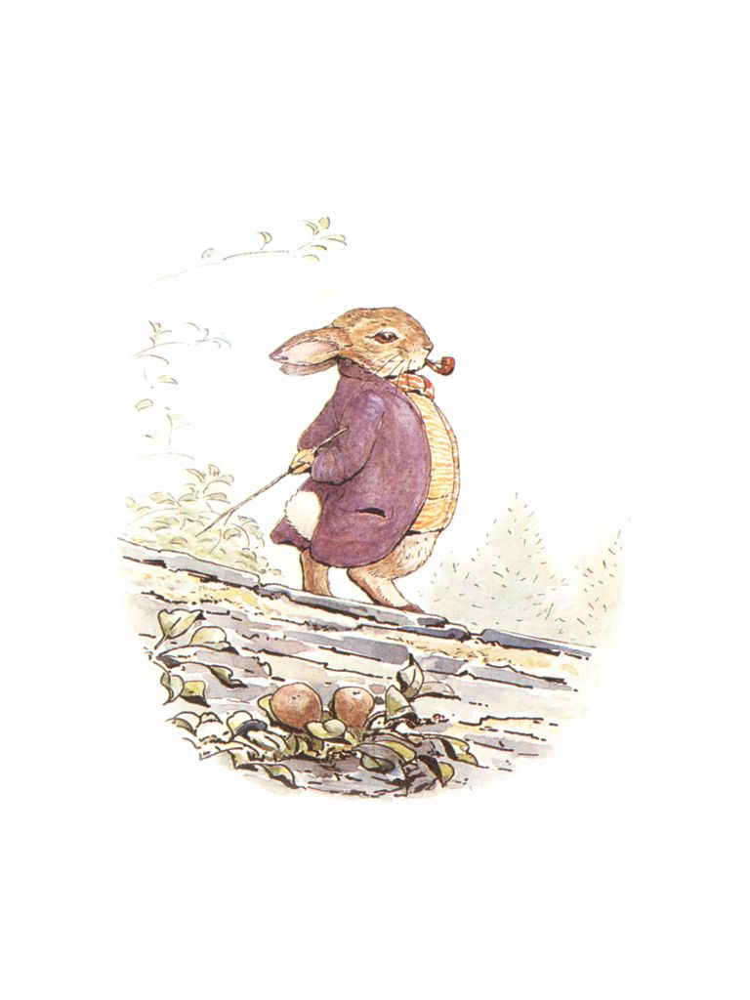
そのうち、とうとうピタパタ、ピタパタという足音がして、石塀の上からモルタルの欠片がいくつか落ちてきました。
ねこは顔を上げました。ベンジャミン・バニー氏がゆっくりやってくるところでした。
バニー氏はうさぎたばこをつめたパイプをくわえ、手には短い鞭を持っていました。
バニー氏は息子を探しにきたのです。
At length there was a pitter-patter, pitter-patter, and some bits of mortar fell from the wall above.
The cat looked up and saw old Mr. Benjamin Bunny prancing along the top of the wall of the upper terrace.
He was smoking a pipe of rabbit-tobacco, and had a little switch in his hand.
He was looking for his son.
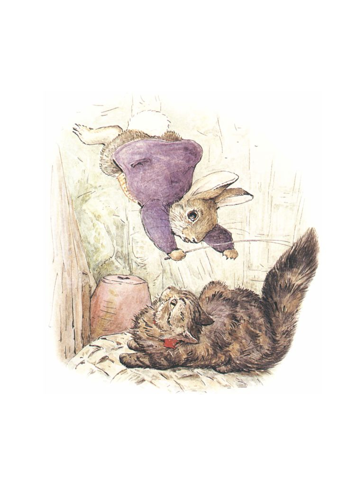
バニー氏はねこのことなど何とも思っていませんでした。
そこで、塀の上からねこの上に大きくジャンプすると、かごからたたき落とし温室の中へ蹴りこみ、毛をひっつかんで一握りむしりとってしまいました。
不意をつかれたねこは、仕返しにバニー氏をひっかくことも忘れてしまいました。
Old Mr. Bunny had no opinion whatever of cats.
He took a tremendous jump off the top of the wall on to the top of the cat, and cuffed it off the basket, and kicked it into the greenhouse, scratching off a handful of fur.
The cat was too much surprised to scratch back.
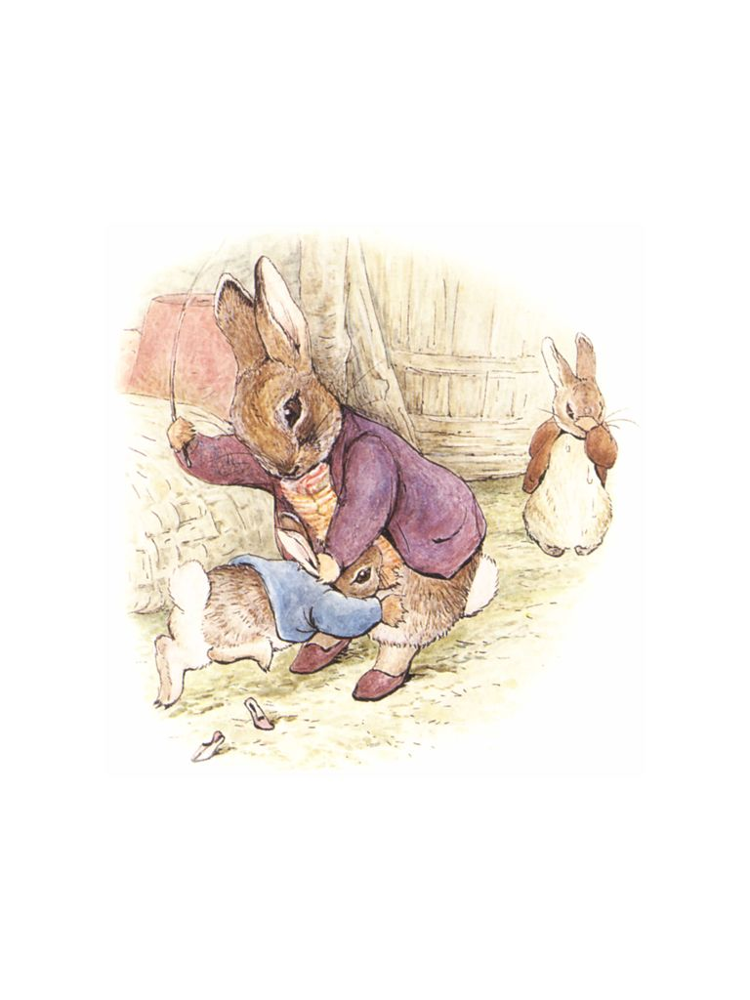
バニー氏はねこを温室に押し込めてしまうと、戸に鍵を掛けました。
それからカゴのところに戻って、息子のベンジャミンの耳を掴んでカゴから引き出し、短い鞭でぶちました。
そのあとで、甥のピーターを出しました。
When old Mr. Bunny had driven the cat into the greenhouse, he locked the door.
Then he came back to the basket and took out his son Benjamin by the ears, and whipped him with the little switch.
Then he took out his nephew Peter.
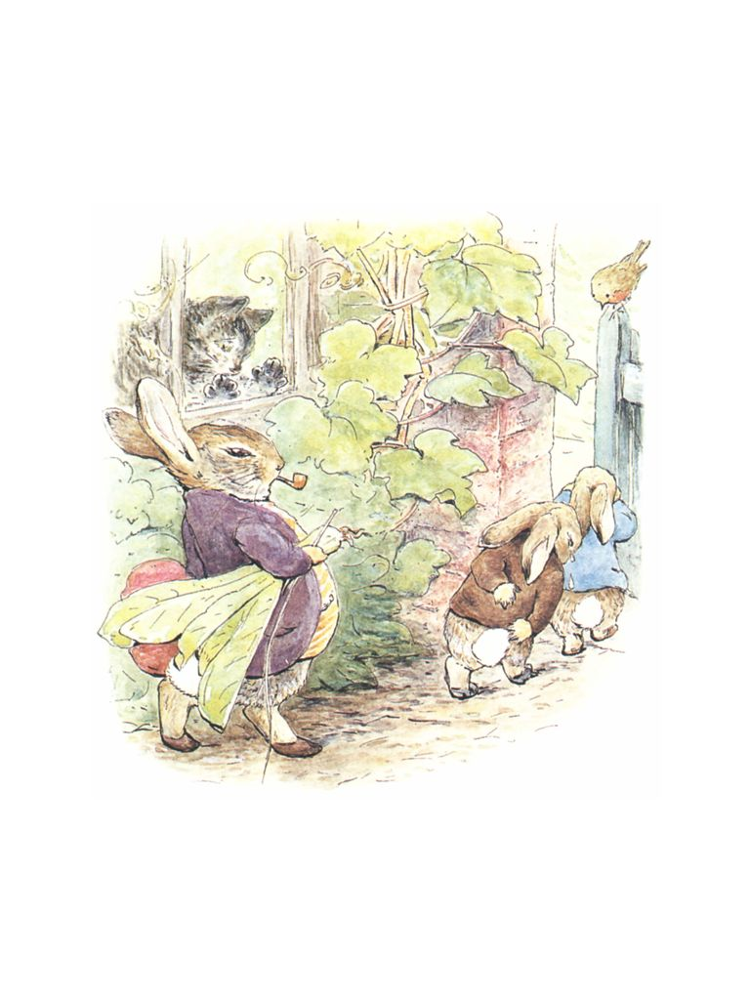
それから、ベンジャミン・バニー氏はタマネギの入っているハンカチを持ち、悠々と畑から引き揚げました。
Then he took out the handkerchief of onions, and marched out of the garden.
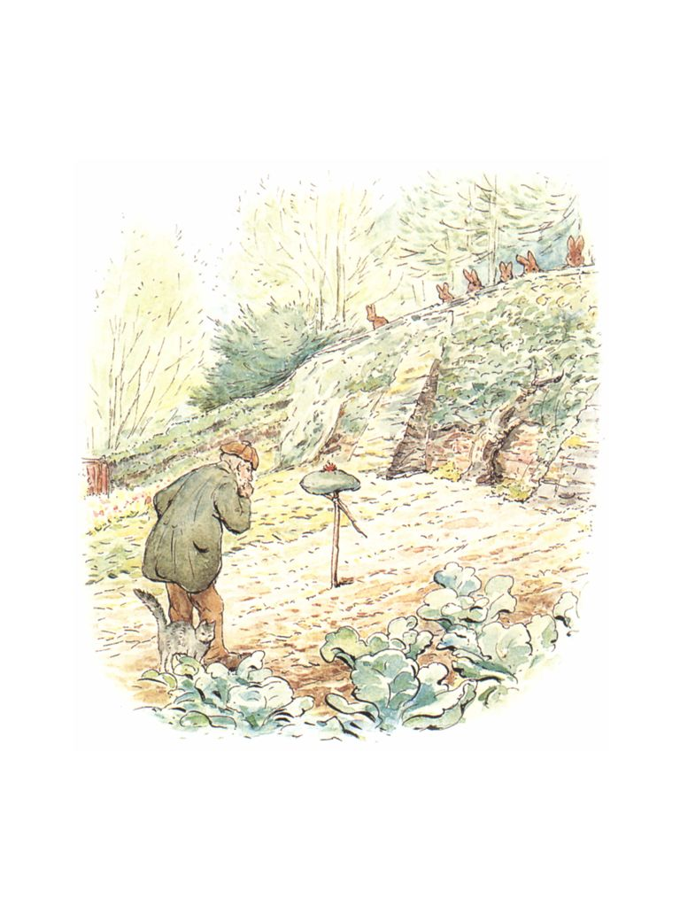
それから30
分ほどして、家に帰って来たマグレガーさんは留守の間にいくつかわけのわからないことが起こっていることに気がつきました。
木靴をはいて、畑中を歩き回ったものがあるようです。――ただ、その足あとがとても小さいのが何ともふしぎでした。
それにどうしてねこが温室に入り込んで、自分で外から鍵を掛けたのか、それもわかりません。
When Mr. McGregor returned about half an hour later he observed several things which perplexed him.
It looked as though some person had been walking all over the garden in a pair of clogs--only the footmarks were too ridiculously little!
Also he could not understand how the cat could have managed to shut herself upinside
the greenhouse, locking the door upon theoutside
.
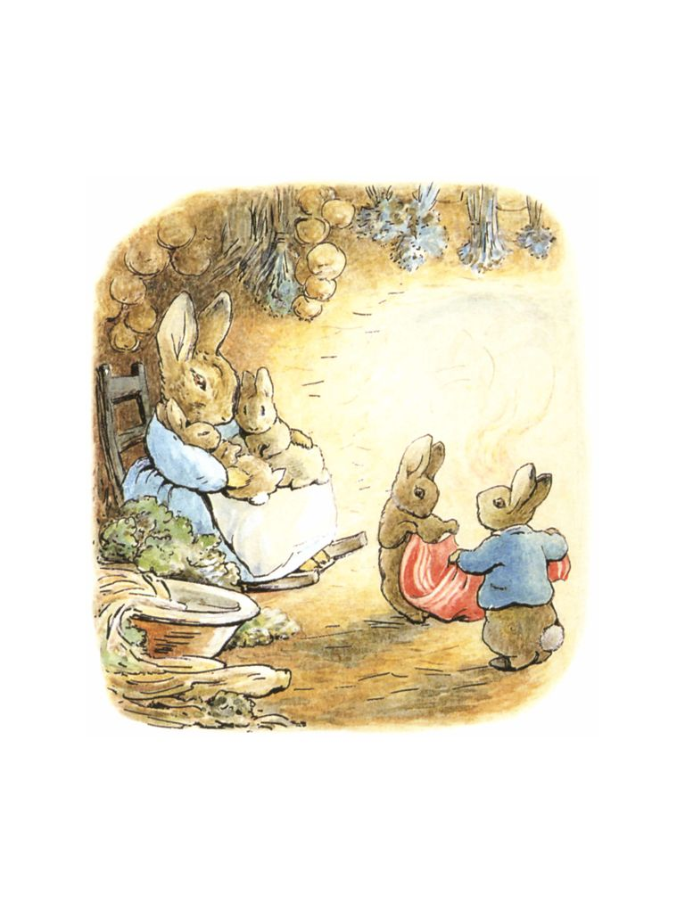
ピーターが家に帰ると、おかあさんはピーターをしからないで許してくれました。ピーターが上着を取り戻してきたのでとてもうれしかったのです。カトンテールとピーターはふたりしてハンカチをたたみました。そして、おかあさんはタマネギを束ね、他の薬草やうさぎたばこといっしょに、台所の天井につるしました。
おしまい
When Peter got home his mother forgave him, because she was so glad to see that he had found his shoes and coat. Cotton-tail and Peter folded up the pocket-handkerchief, and old Mrs. Rabbit strung up the onions and hung them from the kitchen ceiling, with the bunches of herbs and the rabbit-tobacco.
THE END
【対訳】ピーターラビットシリーズ ②
ベンジャミンバニーのおはなし
－THE TALE OF BENJAMIN BUNNY－
発行日 ２０１４年２月５日
著 者 ビアトリクス・ポター
発行者 赤井 仁
発行所 ゴマブックス株式会社
〒１０７－００５２
東京都港区赤坂８－５－40
ペガサス青山７１０
(c) GOMA－BOOKS Co.,ltd. 2014